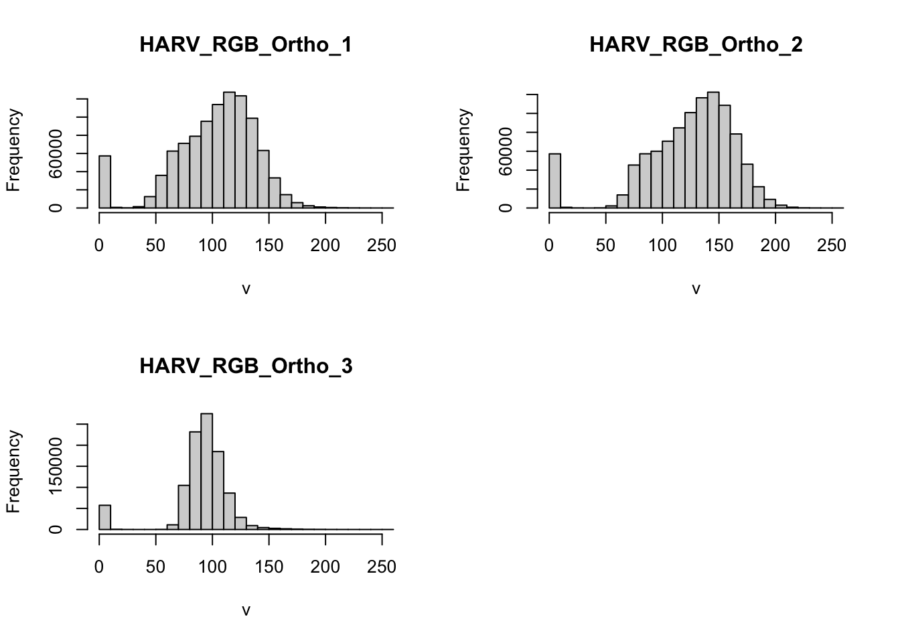
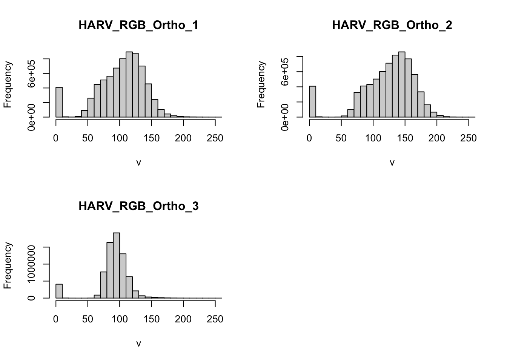

Chapter 1 Introduction to spatial data in R
Learning Objectives
- Create point, line, and polygon shapefiles as
spandsfobjects.- Read shapefiles into
spandsfobjects- Examine
spandsfobjects- Read GeoTiff single and multiband into a
rasterobject.- Examine
rasterobjects
1.1 Conceptualizing spatial vector objects in R
In vector GIS we deal with, points, lines, and polygons, like so:
Challenge
Discuss with your neighbor: What information do we need to store in order to define points, lines, polygons in geographic space?
There are currently two main approaches in R to handle geographic vector data:
1.1.1 The sp package
The first package to provide classes and methods for spatial data types in R is called sp1. Development of the sp package began in the early 2000s in an attempt to standardize how spatial data would be treated in R and to allow for better interoperability between different analysis packages that use spatial data. The package (first release on CRAN in 2005) provides classes and methods to create points, lines, polygons, and grids and to operate on them. About 350 of the spatial analysis packages use the spatial data types that are implemented in sp i.e. they “depend” on the sp package and many more are indirectly dependent.
The foundational structure for any spatial object in sp is the Spatial class. It has two “slots” (new-style S4 class objects in R have pre-defined components called slots):
a bounding box
a CRS class object to define the Coordinate Reference System
This basic structure is then extended, depending on the characteristics of the spatial object (point, line, polygon).
To build up a spatial object in sp we could follow these steps:
I. Create geometric objects (topology)
Points (which may have 2 or 3 dimensions) are the most basic spatial data objects. They are generated out of either a single coordinate or a set of coordinates, like a two-column matrix or a dataframe with a column for latitude and one for longitude.
Lines are generated out of Line objects. A Line object is a spaghetti collection of 2D coordinates2 and is generated out of a two-column matrix or a dataframe with a column for latitude and one for longitude. A Lines object is a list of one or more Line objects, for example all the contours at a single elevation.
Polygons are generated out of Polygon objects. A Polygon object is a spaghetti collection of 2D coordinates with equal first and last coordinates and is generated out of a two-column matrix or a dataframe with a column for latitude and one for longitude. A Polygons object is a list of one or more Polygon objects, for example islands belonging to the same country.
See here for a very simple example for how to create a Line object:
ln1 <- Line(matrix(runif(6), ncol=2))
str(ln1)#> Formal class 'Line' [package "sp"] with 1 slot
#> ..@ coords: num [1:3, 1:2] 0.286 0.733 0.433 0.203 0.244 ...See here for a very simple example for how to create a Lines object:
lns <- Lines(list(ln1), ID = c("hwy1")) # this contains just one Line!
str(lns)#> Formal class 'Lines' [package "sp"] with 2 slots
#> ..@ Lines:List of 1
#> .. ..$ :Formal class 'Line' [package "sp"] with 1 slot
#> .. .. .. ..@ coords: num [1:3, 1:2] 0.286 0.733 0.433 0.203 0.244 ...
#> ..@ ID : chr "hwy1"
- Create spatial objects
Spatial*object (*stands for Points, Lines, or Polygons).
This step adds the bounding box (automatically) and the slot for the Coordinate Reference System or CRS (which needs to be filled with a value manually). SpatialPoints can be directly generated out of the coordinates. SpatialLines and SpatialPolygons objects are generated using lists of Lines or Polygons objects respectively (more below).
See here for how to create a SpatialLines object:
sp_lns <- SpatialLines(list(lns))
str(sp_lns)#> Formal class 'SpatialLines' [package "sp"] with 3 slots
#> ..@ lines :List of 1
#> .. ..$ :Formal class 'Lines' [package "sp"] with 2 slots
#> .. .. .. ..@ Lines:List of 1
#> .. .. .. .. ..$ :Formal class 'Line' [package "sp"] with 1 slot
#> .. .. .. .. .. .. ..@ coords: num [1:3, 1:2] 0.286 0.733 0.433 0.203 0.244 ...
#> .. .. .. ..@ ID : chr "hwy1"
#> ..@ bbox : num [1:2, 1:2] 0.286 0.203 0.733 0.701
#> .. ..- attr(*, "dimnames")=List of 2
#> .. .. ..$ : chr [1:2] "x" "y"
#> .. .. ..$ : chr [1:2] "min" "max"
#> ..@ proj4string:Formal class 'CRS' [package "sp"] with 1 slot
#> .. .. ..@ projargs: chr NA
- Add attributes (Optional:)
Add a data frame with attribute data, which will turn your Spatial* object into a Spatial*DataFrame object. The points in a SpatialPoints object may be associated with a row of attributes to create a SpatialPointsDataFrame object. The coordinates and attributes may, but do not have to be keyed to each other using ID values.
SpatialLinesDataFrame and SpatialPolygonsDataFrame objects are defined using SpatialLines and SpatialPolygons objects and data frames. The ID fields are here required to match the data frame row names.
See here for how to create a SpatialLinesDataframe:
dfr <- data.frame(id = "hwy1", use = "road", cars_per_hour = 10) # note how we use the ID from above!
sp_lns_dfr <- SpatialLinesDataFrame(sp_lns, dfr, match.ID = "id")
str(sp_lns_dfr)#> Formal class 'SpatialLinesDataFrame' [package "sp"] with 4 slots
#> ..@ data :'data.frame': 1 obs. of 3 variables:
#> .. ..$ id : Factor w/ 1 level "hwy1": 1
#> .. ..$ use : Factor w/ 1 level "road": 1
#> .. ..$ cars_per_hour: num 10
#> ..@ lines :List of 1
#> .. ..$ :Formal class 'Lines' [package "sp"] with 2 slots
#> .. .. .. ..@ Lines:List of 1
#> .. .. .. .. ..$ :Formal class 'Line' [package "sp"] with 1 slot
#> .. .. .. .. .. .. ..@ coords: num [1:3, 1:2] 0.286 0.733 0.433 0.203 0.244 ...
#> .. .. .. ..@ ID : chr "hwy1"
#> ..@ bbox : num [1:2, 1:2] 0.286 0.203 0.733 0.701
#> .. ..- attr(*, "dimnames")=List of 2
#> .. .. ..$ : chr [1:2] "x" "y"
#> .. .. ..$ : chr [1:2] "min" "max"
#> ..@ proj4string:Formal class 'CRS' [package "sp"] with 1 slot
#> .. .. ..@ projargs: chr NAA number of spatial methods are available for the classes in sp. Among the ones I use more frequently are:
| function | and what it does |
|---|---|
bbox() |
returns the bounding box coordinates |
proj4string() |
sets or retrieves projection attributes using the CRS object. |
CRS() |
creates an object of class of coordinate reference system arguments |
spplot() |
plots a separate map of all the attributes unless specified otherwise |
coordinates() |
set or retrieve the spatial coordinates. For spatial polygons it returns the centroids. |
over(a, b) |
used for example to retrieve the polygon or grid indices on a set of points |
spsample() |
sampling of spatial points within the spatial extent of objects |
1.1.2 The sf package
The second package, first released on CRAN in late October 2016, is called sf3. It implements a formal standard called “Simple Features” that specifies a storage and access model of spatial geometries (point, line, polygon). A feature geometry is called simple when it consists of points connected by straight line pieces, and does not intersect itself. This standard has been adopted widely, not only by spatial databases such as PostGIS, but also more recent standards such as GeoJSON.
If you work with PostGis or GeoJSON you may have come across the WKT (well-known text) format, for example like these:

Figure 1.1: Well-Known-Text Geometry primitives (wikipedia)

Figure 1.2: Well-Known-Text Multipart geometries (wikipedia)
sf implements this standard natively in R. Data are structured and conceptualized very differently from the sp approach.
In sf spatial objects are stored as a simple data frame with a special column that contains the information for the geographic coordinates. That special column is a list with the same length as the number of rows in the data frame. Each of the individual list elements then can be of any length needed to hold the coordinates that correspond to an individual feature.
To create a spatial object manually the basic steps would be:
I. Create geometric objects (topology)
Geometric objects (simple features) can be created from a numeric vector, matrix or a list with the coordinates. They are called sfg objects for Simple Feature Geometry.
See here for an example of how a LINESTRING sfg object is created:
lnstr_sfg <- st_linestring(matrix(runif(6), ncol=2))
class(lnstr_sfg)#> [1] "XY" "LINESTRING" "sfg"
- Combine all individual single feature objects for the special column.
In order to work our way towards a data frame for all features we create what is called an sfc object with all individual features, which stands for Simple Feature Collection. The sfc object also holds the bounding box and the projection information.
See here for an example of how a sfc object is created:
(lnstr_sfc <- st_sfc(lnstr_sfg)) # just one feature here#> Geometry set for 1 feature
#> geometry type: LINESTRING
#> dimension: XY
#> bbox: xmin: 0.02397248 ymin: 0.1355328 xmax: 0.3947794 ymax: 0.9765345
#> epsg (SRID): NA
#> proj4string: NA#> LINESTRING (0.02397248 0.1355328, 0.3947794 0.9...class(lnstr_sfc) #> [1] "sfc_LINESTRING" "sfc"
- Add attributes.
We now combine the dataframe with the attributes and the simple feature collection. See here how its done.
(lnstr_sf <- st_sf(dfr , lnstr_sfc))#> Simple feature collection with 1 feature and 3 fields
#> geometry type: LINESTRING
#> dimension: XY
#> bbox: xmin: 0.02397248 ymin: 0.1355328 xmax: 0.3947794 ymax: 0.9765345
#> epsg (SRID): NA
#> proj4string: NA
#> id use cars_per_hour lnstr_sfc
#> 1 hwy1 road 10 LINESTRING (0.02397248 0.13...class(lnstr_sf)#> [1] "sf" "data.frame"There are many methods available in the sf package, to find out use
methods(class="sf")#> [1] [ [[<- $<-
#> [4] aggregate as.data.frame cbind
#> [7] coerce extent extract
#> [10] identify initialize mask
#> [13] merge plot print
#> [16] rasterize rbind show
#> [19] slotsFromS3 st_agr st_agr<-
#> [22] st_as_sf st_bbox st_boundary
#> [25] st_buffer st_cast st_centroid
#> [28] st_collection_extract st_convex_hull st_coordinates
#> [31] st_crs st_crs<- st_difference
#> [34] st_geometry st_geometry<- st_intersection
#> [37] st_is st_line_merge st_node
#> [40] st_point_on_surface st_polygonize st_precision
#> [43] st_segmentize st_set_precision st_simplify
#> [46] st_snap st_sym_difference st_transform
#> [49] st_triangulate st_union st_voronoi
#> [52] st_wrap_dateline st_write st_zm
#> see '?methods' for accessing help and source codeHere are some of the other highlights of sf you might be interested in:
provides fast I/O, particularly relevant for large files
directly reads from and writes to spatial databases such as PostGIS
stay tuned for a new
ggplotrelease that will be able to read and plot thesfformat without the need of conversion to a data frame, like thespformat
Note that sp and sf are not the only way spatial objects are conceptualized in R. Other spatial packages may use their own class definitions for spatial data (for example spatstat). Usuallly you can find functions that convert sp and increasingly sf objects to and from these formats.
Challenge
Similarly to the example above generate a Point object in R. Use both, the
spand thesf“approach”.
- Create a matrix
ptsof random numbers with two columns and as many rows as you like. These are your points.- Create a dataframe
attrib_dfwith the same number of rows as yourptsmatrix and a column that holds an attribute. You can make up any attribute.- Use the appropriate commands and
ptsto create
- a
SpatialPointsDataFrameand- an
sfobject with a gemoetry column of classsfc_POINT.
- Try to subset your spatial object using the attribute you have added and the way you are used to from regular data frames.
- How do you determine the bounding box of your spatial object?
1.2 Creating a spatial object from a lat/lon table
Often in your research might have a spreadsheet that contains latitude, longitude and perhaps some attribute values. You know how to read the spreadsheet into a data frame with read.table or read.csv. We can then very easily convert the table into a spatial object in R.
A SpatialPointsDataFrame object can be created directly from a table by specifying which columns contain the coordinates. This can be done in one step by using the coordinates() function. As mentioned above this function can be used not only to retrieve spatial coordinates but also to set them, which is done in R fashion with:
coordinates(myDataframe) <- valuevalue can have different forms – in this context needs to be a character vector which specifies the data frame’s columns for the longitude and latitude (x,y) coordinates.
If we use this on a data frame it automatically converts the data frame object into a SpatialPointsDataFrame object.
An sf object can be created from a data frame in the following way. We take advantage of the st_as_sf() function which converts any foreign object into an sf object. Similarly to above, it requires an argument coords, which in the case of point data needs to be a vector that specifies the data frame’s columns for the longitude and latitude (x,y) coordinates.
my_sf_object <- st_as_sf(myDataframe, coords)Note that coordinates() replaces the original data frame, while st_as_sf() creates a new object and leaves the original data frame untouched.
We use read.csv() to read philly_homicides.csv into a dataframe in R and name it ph_df.
ph_df <- read.csv("data/philly_homicides.csv")
head(ph_df)#> DC_DIST SECTOR DISPATCH_DATE DISPATCH_TIME LOCATION_BLOCK
#> 1 22 1 2014-09-14 16:00:00 1800 BLOCK W MONTGOMERY
#> 2 1 B 2006-01-14 00:00:00 2000 BLOCK MIFFLIN ST
#> 3 1 B 2006-04-01 16:05:00 S 22ND ST /SNYDER AVE
#> 4 1 B 2006-05-10 11:13:00 2100 BLOCK MC KEAN ST
#> 5 1 E 2006-07-01 12:42:00 2100 BLOCK S HICKS ST
#> 6 1 F 2006-07-09 19:13:00 1800 BLOCK SNYDER AVE
#> UCR_GENERAL OBJ_ID TEXT_GENERAL_CODE POINT_X POINT_Y
#> 1 100 1 Homicide - Criminal -75.15680 39.98804
#> 2 100 1 Homicide - Criminal -75.17873 39.92801
#> 3 100 1 Homicide - Criminal -75.18275 39.92607
#> 4 100 1 Homicide - Criminal -75.18092 39.92704
#> 5 100 1 Homicide - Criminal -75.17204 39.92463
#> 6 100 1 Homicide - Criminal -75.17612 39.92517class(ph_df)#> [1] "data.frame"We convert the ph_df data frame into an sf object with st_as_sf()
ph_sf <- st_as_sf(ph_df , coords = c("POINT_X", "POINT_Y"))
class(ph_sf)#> [1] "sf" "data.frame"head(ph_sf)#> Simple feature collection with 6 features and 8 fields
#> geometry type: POINT
#> dimension: XY
#> bbox: xmin: -75.18275 ymin: 39.92463 xmax: -75.1568 ymax: 39.98804
#> epsg (SRID): NA
#> proj4string: NA
#> DC_DIST SECTOR DISPATCH_DATE DISPATCH_TIME LOCATION_BLOCK
#> 1 22 1 2014-09-14 16:00:00 1800 BLOCK W MONTGOMERY
#> 2 1 B 2006-01-14 00:00:00 2000 BLOCK MIFFLIN ST
#> 3 1 B 2006-04-01 16:05:00 S 22ND ST /SNYDER AVE
#> 4 1 B 2006-05-10 11:13:00 2100 BLOCK MC KEAN ST
#> 5 1 E 2006-07-01 12:42:00 2100 BLOCK S HICKS ST
#> 6 1 F 2006-07-09 19:13:00 1800 BLOCK SNYDER AVE
#> UCR_GENERAL OBJ_ID TEXT_GENERAL_CODE geometry
#> 1 100 1 Homicide - Criminal POINT (-75.1568 39.98804)
#> 2 100 1 Homicide - Criminal POINT (-75.17873 39.92801)
#> 3 100 1 Homicide - Criminal POINT (-75.18275 39.92607)
#> 4 100 1 Homicide - Criminal POINT (-75.18092 39.92704)
#> 5 100 1 Homicide - Criminal POINT (-75.17204 39.92463)
#> 6 100 1 Homicide - Criminal POINT (-75.17612 39.92517)Alternatively, we convert the ph_df data frame into a spatial object with using the coordinates function and check with class(ph_df)again to examine which object class the table belongs to now.
coordinates(ph_df) <- c("POINT_X", "POINT_Y")
class(ph_df) # !!#> [1] "SpatialPointsDataFrame"
#> attr(,"package")
#> [1] "sp"A brief, but important word about projection:
Note that both the SpatialPointsDataFrame and the sf POINTS object you just created do not have a projection defined. It is ok to plot, but be aware that for any meaningful spatial operation you will need to define a projection.
This is how it’s done:
is.projected(ph_df) # see if a projection is defined #> [1] NAproj4string(ph_df) <- CRS("+init=epsg:4326") # this is WGS84
is.projected(ph_df) # voila! hm. wait a minute..#> [1] FALSE# For the `sf` object you want to use
st_crs(ph_sf)#> Coordinate Reference System: NAst_crs(ph_sf) <- 4326 # we can use EPSG as numeric here
st_crs(ph_sf)#> Coordinate Reference System:
#> EPSG: 4326
#> proj4string: "+proj=longlat +datum=WGS84 +no_defs"We will save this for later use. (Note that this will likely generate an error message. By default sf_write checks if the file already exists, and if so it will not overwrite it. If you want to force it to overwrite use the option delete_layer = TRUE.)
st_write(ph_sf, "data/PhillyHomicides", driver = "ESRI Shapefile")
# to save out using writeOGR from rgdal
# note that we need to save the ph_df, which we converted to sp object!
# writeOGR(ph_df, "data/PhillyHomicides", "PhillyHomcides", driver = "ESRI Shapefile")
# to force save:
# writeOGR(ph_df, "data/PhillyHomicides", "PhillyHomcides", driver = "ESRI Shapefile", overwrite_layer = TRUE)1.3 Loading shape files into R
1.3.1 How to work with rgdal
In order to read spatial data into R and turn them into Spatial* family objects we rely on the rgdal package. It provides us direct access to the powerful GDAL library from within R.
We can read in and write out spatial data using:
readOGR() and writeOGR() (for vector)
readGDAL() and writeGDAL() (for raster/grids)The parameters provided for each function vary depending on the exact spatial file type you are reading. We will take an ESRI shapefile as an example. A shapefile - as you know - consists of various files of the same name, but with different extensions. They should all be in one directory and that is what R expects.
When reading in a shapefile, readOGR() requires the following two arguments:
datasource name (dsn) # the path to the folder that contains the files
# this is a path to the folder, not a filename!
layer name (layer) # the shapefile name WITHOUT extension
# this is not a path but just the name of the file!Setting these arguments correctly can be cause of much headache for beginners, so let me spell it out:
Firstly, you obviously need to know the name of shapefile.
Secondly, you need to know the name and location of the folder that contains all the shapefile parts.
Lastly,
readOGRonly reads the file and dumps it on your screen. But similarly when reading csv tables you want to actually work with the file, so you need to assign it to an R object.
Now let’s do this.
We load the rgdal package and read PhillyTotalPopHHinc into an object called philly. We can also examine the object, for example with summary() or class().
library(rgdal)
philly_sp <- readOGR("data/Philly/", "PhillyTotalPopHHinc") #> OGR data source with driver: ESRI Shapefile
#> Source: "/Users/cengel/Anthro/R_Class/R_Workshops/R-spatial/data/Philly", layer: "PhillyTotalPopHHinc"
#> with 384 features
#> It has 17 fields# side note: unlike read.csv readOGR does not understand the ~ as valid element of a path. This (on Mac) will not work:
# philly <- readOGR("~/Desktop/R-data-viz/data/Philly/", "PhillyTotalPopHHinc")
summary(philly_sp)#> Object of class SpatialPolygonsDataFrame
#> Coordinates:
#> min max
#> x 1739496.5 1764029.7
#> y 457343.7 490544.9
#> Is projected: TRUE
#> proj4string :
#> [+proj=aea +lat_1=29.5 +lat_2=45.5 +lat_0=37.5 +lon_0=-96 +x_0=0
#> +y_0=0 +ellps=GRS80 +units=m +no_defs]
#> Data attributes:
#> STATEFP10 COUNTYFP10 TRACTCE10 GEOID10 NAME10
#> 42:384 101:384 000100 : 1 42101000100: 1 1 : 1
#> 000200 : 1 42101000200: 1 10.01 : 1
#> 000300 : 1 42101000300: 1 10.02 : 1
#> 000401 : 1 42101000401: 1 100 : 1
#> 000402 : 1 42101000402: 1 101 : 1
#> 000500 : 1 42101000500: 1 102 : 1
#> (Other):378 (Other) :378 (Other):378
#> NAMELSAD10 MTFCC10 FUNCSTAT10 ALAND10
#> Census Tract 1 : 1 G5020:384 S:384 Min. : 99958
#> Census Tract 10.01: 1 1st Qu.: 397457
#> Census Tract 10.02: 1 Median : 600362
#> Census Tract 100 : 1 Mean : 904482
#> Census Tract 101 : 1 3rd Qu.: 955452
#> Census Tract 102 : 1 Max. :17228698
#> (Other) :378
#> AWATER10 INTPTLAT10 INTPTLON10
#> Min. : 0 +39.8798897: 1 -074.9667387: 1
#> 1st Qu.: 0 +39.8898768: 1 -074.9702250: 1
#> Median : 0 +39.8904539: 1 -074.9742967: 1
#> Mean : 58045 +39.8988328: 1 -074.9781805: 1
#> 3rd Qu.: 0 +39.9024981: 1 -074.9789137: 1
#> Max. :3463789 +39.9051799: 1 -074.9805151: 1
#> (Other) :378 (Other) :378
#> GISJOIN Shape_area Shape_len medHHinc
#> G4201010000100: 1 Min. : 105512 Min. : 1321 Min. : 9286
#> G4201010000200: 1 1st Qu.: 398512 1st Qu.: 2734 1st Qu.: 24946
#> G4201010000300: 1 Median : 601061 Median : 3426 Median : 35365
#> G4201010000401: 1 Mean : 962528 Mean : 4239 Mean : 38509
#> G4201010000402: 1 3rd Qu.: 966639 3rd Qu.: 4603 3rd Qu.: 49474
#> G4201010000500: 1 Max. :20692491 Max. :30881 Max. :130139
#> (Other) :378 NA's :9
#> totalPop
#> Min. : 0
#> 1st Qu.:2799
#> Median :3914
#> Mean :3974
#> 3rd Qu.:5111
#> Max. :8322
#> class(philly_sp)#> [1] "SpatialPolygonsDataFrame"
#> attr(,"package")
#> [1] "sp"Let’s check out the attribute data and plot a subset of polygons with a median household income (medHHinc) of over 60000 on top of the plot of the entire city.
names(philly_sp)#> [1] "STATEFP10" "COUNTYFP10" "TRACTCE10" "GEOID10" "NAME10"
#> [6] "NAMELSAD10" "MTFCC10" "FUNCSTAT10" "ALAND10" "AWATER10"
#> [11] "INTPTLAT10" "INTPTLON10" "GISJOIN" "Shape_area" "Shape_len"
#> [16] "medHHinc" "totalPop"head(philly_sp)#> STATEFP10 COUNTYFP10 TRACTCE10 GEOID10 NAME10 NAMELSAD10
#> 0 42 101 036301 42101036301 363.01 Census Tract 363.01
#> 1 42 101 036400 42101036400 364 Census Tract 364
#> 2 42 101 036600 42101036600 366 Census Tract 366
#> 3 42 101 034803 42101034803 348.03 Census Tract 348.03
#> 4 42 101 034702 42101034702 347.02 Census Tract 347.02
#> 5 42 101 036202 42101036202 362.02 Census Tract 362.02
#> MTFCC10 FUNCSTAT10 ALAND10 AWATER10 INTPTLAT10 INTPTLON10
#> 0 G5020 S 2322732 66075 +40.0895349 -074.9667387
#> 1 G5020 S 4501110 8014 +40.1127747 -074.9789137
#> 2 G5020 S 1004313 1426278 +39.9470272 -075.1404472
#> 3 G5020 S 1271533 8021 +40.0619427 -075.0023705
#> 4 G5020 S 1016206 0 +40.0570427 -075.0283288
#> 5 G5020 S 1116115 2329 +40.0838623 -074.9781805
#> GISJOIN Shape_area Shape_len medHHinc totalPop
#> 0 G4201010036301 2388806 6850.541 54569 3695
#> 1 G4201010036400 4509124 10567.331 NA 703
#> 2 G4201010036600 2430591 9256.983 130139 1643
#> 3 G4201010034803 1279556 4927.632 56667 4390
#> 4 G4201010034702 1016207 5919.885 69981 3807
#> 5 G4201010036202 1118443 5899.099 61513 6138plot(philly_sp)
philly_sp_rich <- subset(philly_sp, medHHinc > 60000)
plot(philly_sp_rich, add=T, col="red")
GDAL supports over 200 raster formats and vector formats. Use ogrDrivers() and gdalDrivers() (without arguments) to find out which formats your rgdal install can handle.
1.3.2 How to do this in sf
sf also relies on GDAL, but we don’t need to load a separate R library to read data in. We can use st_read(), which simply takes the path of the directory with the shapefile as argument.
So let’s do the same as above using the sf package.
# read in
philly_sf <- st_read("data/Philly/")#> Reading layer `PhillyTotalPopHHinc' from data source `/Users/cengel/Anthro/R_Class/R_Workshops/R-spatial/data/Philly' using driver `ESRI Shapefile'
#> Simple feature collection with 384 features and 17 fields
#> geometry type: MULTIPOLYGON
#> dimension: XY
#> bbox: xmin: 1739497 ymin: 457343.7 xmax: 1764030 ymax: 490544.9
#> epsg (SRID): NA
#> proj4string: +proj=aea +lat_1=29.5 +lat_2=45.5 +lat_0=37.5 +lon_0=-96 +x_0=0 +y_0=0 +ellps=GRS80 +units=m +no_defs# take a look at what we've got
names(philly_sf)#> [1] "STATEFP10" "COUNTYFP10" "TRACTCE10" "GEOID10" "NAME10"
#> [6] "NAMELSAD10" "MTFCC10" "FUNCSTAT10" "ALAND10" "AWATER10"
#> [11] "INTPTLAT10" "INTPTLON10" "GISJOIN" "Shape_area" "Shape_len"
#> [16] "medHHinc" "totalPop" "geometry"# note the added geometry column, as compared to:
names(philly_sp)#> [1] "STATEFP10" "COUNTYFP10" "TRACTCE10" "GEOID10" "NAME10"
#> [6] "NAMELSAD10" "MTFCC10" "FUNCSTAT10" "ALAND10" "AWATER10"
#> [11] "INTPTLAT10" "INTPTLON10" "GISJOIN" "Shape_area" "Shape_len"
#> [16] "medHHinc" "totalPop"# plot works differently here:
plot(philly_sf)#> Warning: plotting the first 10 out of 17 attributes; use max.plot = 17 to
#> plot all
# to do the same as above we need to directly print the geometry column
st_geometry(philly_sf) # use this method to retreive geometry#> Geometry set for 384 features
#> geometry type: MULTIPOLYGON
#> dimension: XY
#> bbox: xmin: 1739497 ymin: 457343.7 xmax: 1764030 ymax: 490544.9
#> epsg (SRID): NA
#> proj4string: +proj=aea +lat_1=29.5 +lat_2=45.5 +lat_0=37.5 +lon_0=-96 +x_0=0 +y_0=0 +ellps=GRS80 +units=m +no_defs
#> First 5 geometries:#> MULTIPOLYGON (((1763647 484837.3, 1763473 48519...#> MULTIPOLYGON (((1761348 489213.5, 1761372 48918...#> MULTIPOLYGON (((1752887 468814.9, 1752808 46863...#> MULTIPOLYGON (((1761207 482777.8, 1761634 48258...#> MULTIPOLYGON (((1759301 482266.6, 1759120 48186...plot(st_geometry(philly_sf))
# subset the familar way
philly_sf_rich <- subset(philly_sf, medHHinc > 60000)
plot(st_geometry(philly_sf_rich), add=T, col="red")
1.4 Raster data in R
Raster files, as you might know, have a much more compact data structure than vectors. Because of their regular structure the coordinates do not need to be recorded for each pixel or cell in the rectangular extent. A raster is defined by:
- a CRS
- coordinates of its origin
- a distance or cell size in each direction
- a dimension or numbers of cells in each direction
- an array of cell values
Given this structure, coordinates for any cell can be computed and don’t need to be stored.
The raster package4 is a major extension of spatial data classes to access large rasters and in particular to process very large files. It includes object classes for RasterLayer, RasterStacks, and RasterBricks, functions for converting among these classes, and operators for computations on the raster data. Conversion from sp type objects into raster type objects is possible.
If we wanted to do create a raster object from scratch we would do the following:
# specify the RasterLayer with the following parameters:
# - minimum x coordinate (left border)
# - minimum y coordinate (bottom border)
# - maximum x coordinate (right border)
# - maximum y coordinate (top border)
# - resolution (cell size) in each dimension
r <- raster(xmn=-0.5, ymn=-0.5, xmx=4.5, ymx=4.5, resolution=c(1,1))
r#> class : RasterLayer
#> dimensions : 5, 5, 25 (nrow, ncol, ncell)
#> resolution : 1, 1 (x, y)
#> extent : -0.5, 4.5, -0.5, 4.5 (xmin, xmax, ymin, ymax)
#> coord. ref. : +proj=longlat +datum=WGS84 +ellps=WGS84 +towgs84=0,0,0Note that this raster object has a CRS defined! If the crs argument is missing when creating the Raster object, the x coordinates are within -360 and 360 and the y coordinates are within -90 and 90, the WGS84 projection is used by default!
Good to know.
To add some values to the cells we could the following.
class(r)#> [1] "RasterLayer"
#> attr(,"package")
#> [1] "raster"r <- setValues(r, runif(25))
class(r)#> [1] "RasterLayer"
#> attr(,"package")
#> [1] "raster"plot(r); points(coordinates(r), pch=3)
(See the rasterVis package for more advanced plotting of Raster* objects.)
RasterLayer objects can also be created from a matrix.
class(volcano)#> [1] "matrix"volcano.r <- raster(volcano)
class(volcano.r)#> [1] "RasterLayer"
#> attr(,"package")
#> [1] "raster"And to read in a raster file we can use the raster() function. This raster is generated as part of the NEON Harvard Forest field site.
library(raster)
HARV <- raster("data/HARV_RGB_Ortho.tif")Typing the name of the object will give us what’s in there:
HARV#> class : RasterLayer
#> band : 1 (of 3 bands)
#> dimensions : 2317, 3073, 7120141 (nrow, ncol, ncell)
#> resolution : 0.25, 0.25 (x, y)
#> extent : 731998.5, 732766.8, 4712956, 4713536 (xmin, xmax, ymin, ymax)
#> coord. ref. : +proj=utm +zone=18 +datum=WGS84 +units=m +no_defs +ellps=WGS84 +towgs84=0,0,0
#> data source : /Users/cengel/Anthro/R_Class/R_Workshops/R-spatial/data/HARV_RGB_Ortho.tif
#> names : HARV_RGB_Ortho
#> values : 0, 255 (min, max)We can plot it like this:
plot(HARV)
We can find out about the Coordinate Reference System with this:
crs(HARV)#> CRS arguments:
#> +proj=utm +zone=18 +datum=WGS84 +units=m +no_defs +ellps=WGS84
#> +towgs84=0,0,0See what you can do with such an object:
methods(class=class(HARV))#> [1] ! != [ [[
#> [5] [<- %in% == $
#> [9] $<- addLayer aggregate all.equal
#> [13] area Arith as.array as.data.frame
#> [17] as.factor as.integer as.list as.logical
#> [21] as.matrix as.raster as.vector asFactor
#> [25] atan2 bandnr barplot bbox
#> [29] boundaries boxplot brick buffer
#> [33] calc cellStats clamp click
#> [37] clump coerce colSums Compare
#> [41] contour coordinates corLocal cover
#> [45] crop crosstab cut cv
#> [49] density dim dim<- direction
#> [53] disaggregate distance extend extent
#> [57] extract flip focal freq
#> [61] getValues getValuesBlock getValuesFocal gridDistance
#> [65] head hist image interpolate
#> [69] intersect is.factor is.finite is.infinite
#> [73] is.na is.nan isLonLat KML
#> [77] labels layerize length levels
#> [81] levels<- lines localFun log
#> [85] Logic mask match Math
#> [89] Math2 maxValue mean merge
#> [93] minValue modal mosaic names
#> [97] names<- ncell ncol nlayers
#> [101] nrow origin origin<- overlay
#> [105] persp plot predict print
#> [109] proj4string proj4string<- quantile raster
#> [113] rasterize readAll readStart readStop
#> [117] reclassify res resample RGB
#> [121] rotate rowSums sampleRandom sampleRegular
#> [125] sampleStratified scale select setMinMax
#> [129] setValues shift show spplot
#> [133] stack stackSelect subs subset
#> [137] Summary summary t tail
#> [141] text trim unique update
#> [145] values values<- Which which.max
#> [149] which.min writeRaster writeStart writeStop
#> [153] writeValues xmax xmin xres
#> [157] ymax ymin yres zonal
#> [161] zoom
#> see '?methods' for accessing help and source codeWe can explore the distribution of values contained within our raster using the hist() function which produces a histogram. Histograms are often useful in identifying outliers and bad data values in our raster data.
hist(HARV)#> Warning in .hist1(x, maxpixels = maxpixels, main = main, plot = plot, ...):
#> 1% of the raster cells were used. 100000 values used.
Notice that an warning message is thrown when R creates the histogram.
This warning is caused by the default maximum pixels value of 100,000 associated with the hist function. This maximum value is to ensure processing efficiency as our data become larger!
ncell(HARV)#> [1] 7120141hist(HARV,
maxpixels = ncell(HARV))
At times it may be useful to explore raster metadata before loading them into R. This can be done with:
GDALinfo("path-to-raster-here") A raster dataset can contain one or more bands. We can view the number of bands in a raster using the nlayers() function.
nlayers(HARV)#> [1] 1We can use the raster() function to import one single band from a single OR from a multi-band raster. For multi-band raster, we can specify which band we want to read in.
HARV_Band2 <-
raster("data/HARV_RGB_Ortho.tif", band = 2)
plot(HARV_Band2)To bring in all bands of a multi-band raster, we use the stack() function.
HARV_stack <-
stack("data/HARV_RGB_Ortho.tif")
# how many layers?
nlayers(HARV_stack)#> [1] 3# view attributes of stack object
HARV_stack#> class : RasterStack
#> dimensions : 2317, 3073, 7120141, 3 (nrow, ncol, ncell, nlayers)
#> resolution : 0.25, 0.25 (x, y)
#> extent : 731998.5, 732766.8, 4712956, 4713536 (xmin, xmax, ymin, ymax)
#> coord. ref. : +proj=utm +zone=18 +datum=WGS84 +units=m +no_defs +ellps=WGS84 +towgs84=0,0,0
#> names : HARV_RGB_Ortho.1, HARV_RGB_Ortho.2, HARV_RGB_Ortho.3
#> min values : 0, 0, 0
#> max values : 255, 255, 255# what happens when we plot?
plot(HARV_stack)
# if we know that it is an RGB multiband raster we can plot them all in one
plotRGB(HARV_stack)
1.4.1 RasterStack vs RasterBrick in R
The R RasterStack and RasterBrick object types can both store multiple bands. However, how they store each band is different. The bands in a RasterStack are stored as links to raster data that is located somewhere on our computer. A RasterBrick contains all of the objects stored within the actual R object. Since in the RasterBrick, all of the bands are stored within the actual object its object size is much larger than the RasterStack object.
In most cases, we can work with a RasterBrick in the same way we might work with a RasterStack. However, a RasterBrick is often more efficient and faster to process - which is important when working with larger files.
We can turn a RasterStack into a RasterBrick in R by using brick(StackName). Use the object.size() function to compare stack and brick R objects.
object.size(HARV_stack)#> 41712 bytesHARV_brick <- brick(HARV_stack)
object.size(HARV_brick)#> 170896376 bytesA simple grid can be built like this:
# specify the grid topology with the following parameters:
# - the smallest coordinates for each dimension, here: 0,0
# - cell size in each dimension, here: 1,1
# - number of cells in each dimension, here: 5,5
gtopo <- GridTopology(c(0,0), c(1,1), c(5,5)) # create the grid
datafr <- data.frame(runif(25)) # make up some data
SpGdf <- SpatialGridDataFrame(gtopo, datafr) # create the grid data frame
summary(SpGdf)R Bivand (2011) Introduction to representing spatial objects in R↩
Coordinates should be of type double and will be promoted if not.↩
E. Pebesma & R. Bivand (2016)Spatial data in R: simple features and future perspectives↩
The
geo_join()command from thetigrispackage also provides a convenient way to merge a data frame to a spatial data frame.↩